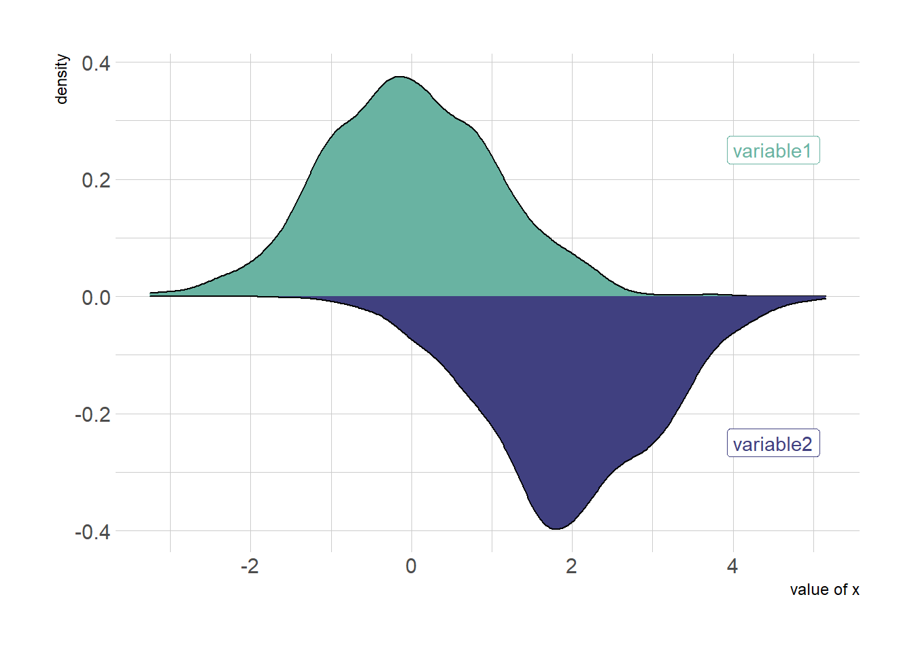
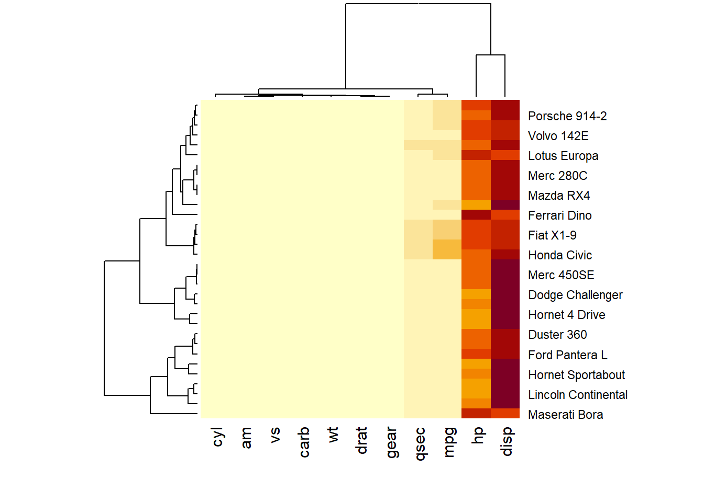
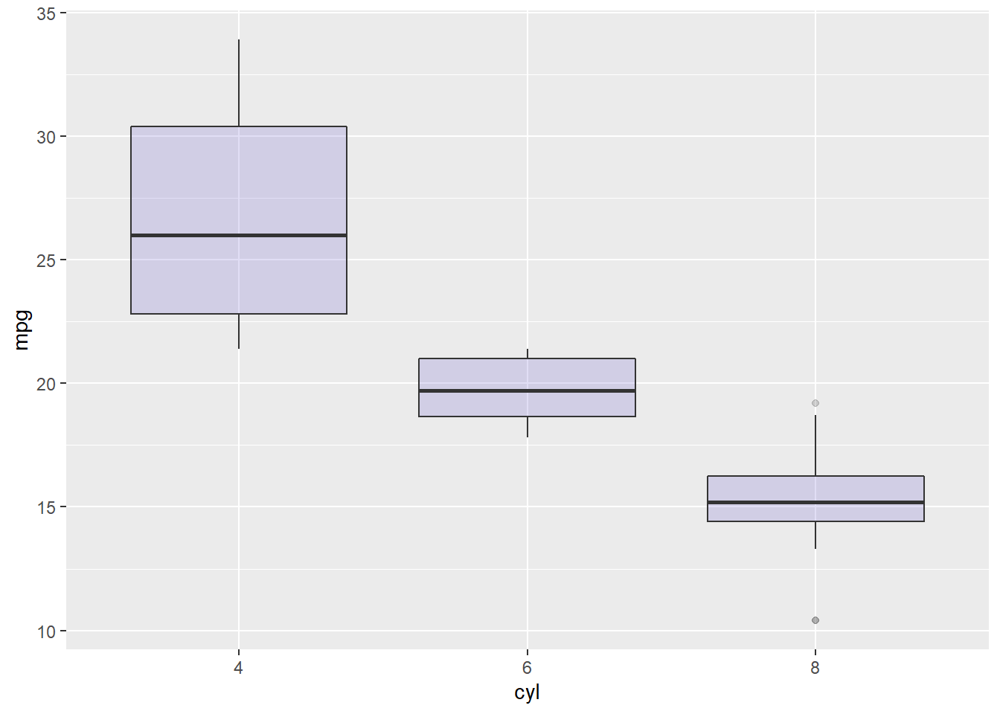

Chapter 3 Literature
3.1 Grouped and Stacked Barplot
Grouped and Stacked barplot display a numeric value for several entities, organised in groups and subgroups. It is probably better to have a solid understanding of the basic barplot first.
ggplot2 is probably the best option to build grouped and stacked barchart. The input data frame requires to have 2 categorical variables that will be passed to the x and fill arguments of the aes() function. Toggling from grouped to stacked is pretty easy thanks to the position argument.
3.1.1 Grouped, Stacked and Percent Stacked Barplot in ggplot2
This post explains how to build grouped, stacked and percent stacked barplot with R and ggplot2. It provides a reproducible example with code for each type.
3.1.1.1 Grouped Barchart
A grouped barplot display a numeric value for a set of entities split in groups and subgroups. Before trying to build one, check how to make a basic barplot with R and ggplot2.
A few explanation about the code below:
- Input dataset must provide 3 columns: the numeric value (value), and 2 categorical variables for the group (specie) and the subgroup (condition) levels.
- In the aes() call, x is the group (specie), and the subgroup (condition) is given to the fill argument.
- In the geom_bar() call, position=dodge must be specified to have the bars one beside each other.
# library
library(ggplot2)
# create a dataset
specie <- c(rep("sorgho" , 3) , rep("poacee" , 3) , rep("banana" , 3) , rep("triticum" , 3) )
condition <- rep(c("normal" , "stress" , "Nitrogen") , 4)
value <- abs(rnorm(12 , 0 , 15))
data <- data.frame(specie,condition,value)
# Grouped
ggplot(data, aes(fill=condition, y=value, x=specie)) +
geom_bar(position="dodge", stat="identity")
3.1.2 Stacked Barchart
A stacked barplot is very similar to the grouped barplot above. The subgroups are just displayed on top of each other, not beside.
The only thing to change to get this figure is to switch the position argument to stack.
# library
library(ggplot2)
# create a dataset
specie <- c(rep("sorgho" , 3) , rep("poacee" , 3) , rep("banana" , 3) , rep("triticum" , 3) )
condition <- rep(c("normal" , "stress" , "Nitrogen") , 4)
value <- abs(rnorm(12 , 0 , 15))
data <- data.frame(specie,condition,value)
# Stacked
ggplot(data, aes(fill=condition, y=value, x=specie)) +
geom_bar(position="stack", stat="identity")
3.1.3 Percent Stacked Barchart
Once more, there is not much to do to switch to a percent stacked barplot. Just switch to position=fill. Now, the percentage of each subgroup is represented, allowing to study the evolution of their proportion in the whole.
# library
library(ggplot2)
# create a dataset
specie <- c(rep("sorgho" , 3) , rep("poacee" , 3) , rep("banana" , 3) , rep("triticum" , 3) )
condition <- rep(c("normal" , "stress" , "Nitrogen") , 4)
value <- abs(rnorm(12 , 0 , 15))
data <- data.frame(specie,condition,value)
# Stacked + percent
ggplot(data, aes(fill=condition, y=value, x=specie)) +
geom_bar(position="fill", stat="identity")
3.1.4 Grouped Barchart Customization
As usual, some customization are often necessary to make the chart look better and personnal. Lets:
- add a title
- use a theme
- change color palette. See more here.
- customize axis titles
# library
library(ggplot2)
library(viridis)
library(hrbrthemes)
# create a dataset
specie <- c(rep("sorgho" , 3) , rep("poacee" , 3) , rep("banana" , 3) , rep("triticum" , 3) )
condition <- rep(c("normal" , "stress" , "Nitrogen") , 4)
value <- abs(rnorm(12 , 0 , 15))
data <- data.frame(specie,condition,value)
# Small multiple
ggplot(data, aes(fill=condition, y=value, x=specie)) +
geom_bar(position="stack", stat="identity") +
scale_fill_viridis(discrete = T) +
ggtitle("Studying 4 species..") +
theme_ipsum() +
xlab("")3.1.5 Small Multiple
Small multiple can be used as an alternative of stacking or grouping. It is straightforward to make thanks to the facet_wrap() function.
# library
library(ggplot2)
library(viridis)
library(hrbrthemes)
# create a dataset
specie <- c(rep("sorgho" , 3) , rep("poacee" , 3) , rep("banana" , 3) , rep("triticum" , 3) )
condition <- rep(c("normal" , "stress" , "Nitrogen") , 4)
value <- abs(rnorm(12 , 0 , 15))
data <- data.frame(specie,condition,value)
# Graph
ggplot(data, aes(fill=condition, y=value, x=condition)) +
geom_bar(position="dodge", stat="identity") +
scale_fill_viridis(discrete = T, option = "E") +
ggtitle("Studying 4 species..") +
facet_wrap(~specie) +
theme_ipsum() +
theme(legend.position="none") +
xlab("")
3.1.6 Stacked Barplot for Evolution
Stacked area chart are sometimes used to study an evolution using each group on the X axis as a timestamp. There are many alternatives to that, like streamgraph or area chart:
3.1.6.1 Most Basic Streamgraph
This post describes how to build a basic streamgraph using R and the streamgraph package. It provides the reproducible code and explanation.
This post describe the basic use of the streamgraph package. Your input needs 3 columns:
- Numeric variable for the X axis. Usually it provides time.
- Numeric variable for the Y axis: this is the variable we are studying
- Categorical variable: each group will be plotted as a distinct shape
- The streamgraph() function requires those 3 inputs to work.
# Library
#library(streamgraph)
# Create data:
#data <- data.frame(
# year=rep(seq(1990,2016) , each=10),
# name=rep(letters[1:10] , 27),
# value=sample( seq(0,1,0.0001) , 270)
#)
# Basic stream graph: just give the 3 arguments
#pp <- streamgraph(data, key="name", value="value", date="year", height="300px", width="1000px")
#pp
# save the widget
# library(htmlwidgets)
# saveWidget(pp, file=paste0( getwd(), "/HtmlWidget/streamgraphBasic.html"))
Alt text
3.1.7 Stacking Barplot
# Libraries
library(tidyverse)
library(babynames)
library(streamgraph)
library(viridis)
library(hrbrthemes)
library(plotly)
# Load dataset from github
data <- babynames %>%
filter(name %in% c("Amanda", "Jessica", "Patricia", "Deborah", "Dorothy", "Helen")) %>%
filter(sex=="F")
# Plot
p <- data %>%
ggplot( aes(x=year, y=n, fill=name, text=name)) +
geom_area( ) +
scale_fill_viridis(discrete = TRUE) +
theme(legend.position="none") +
ggtitle("Popularity of American names in the previous 30 years") +
theme_ipsum() +
theme(legend.position="none")
ggplotly(p, tooltip="text")3.1.8 Three Periods Stacked Barplot
# create dummy data
don <- data.frame(
x = rep(seq(2000,2005), 3),
value = c( 75, 73, 68, 57, 36, 0, 15, 16, 17, 18, 19, 20, 10, 11, 15, 25, 45, 80),
group = rep(c("A", "B", "C"), each=6)
)
#plot
don %>%
ggplot( aes(x=x, y=value, fill=group)) +
geom_area( ) +
scale_fill_viridis(discrete = TRUE) +
theme(legend.position="none") +
theme_ipsum() +
theme(legend.position="none")
3.1.9 Zoom on Specific Variable
#plot
don %>%
filter(group=="B") %>%
ggplot( aes(x=x, y=value, fill=group)) +
geom_area( fill="#22908C") +
theme(legend.position="none") +
theme_ipsum() +
theme(legend.position="none")3.1.10 Few Categories Stacked Barplot
data %>%
ggplot( aes(x=year, y=n, group=name, color=name)) +
geom_line() +
scale_color_viridis(discrete = TRUE) +
theme(legend.position="none") +
ggtitle("Popularity of American names in the previous 30 years") +
theme_ipsum()3.1.11 Many Categories Stacked Barplot
data %>%
ggplot( aes(x=year, y=n, group=name, fill=name)) +
geom_area() +
scale_fill_viridis(discrete = TRUE) +
theme(legend.position="none") +
ggtitle("Popularity of American names in the previous 30 years") +
theme_ipsum() +
theme(
legend.position="none",
panel.spacing = unit(0.1, "lines"),
strip.text.x = element_text(size = 8)
) +
facet_wrap(~name, scale="free_y")
3.1.12 Base R
A stacked area chart showing the evolution of a few baby names in the US. Zoom on a specific time frame through brushing. Highlight a specific group by hovering the legend. Double click to unzoom.
3.1.13 Grouped, Stacked and Percent Stacked Barplot in Base R
This post explains how to build grouped, stacked and percent stacked barplot with base R. It provides a reproducible example with code for each type.
3.1.13.1 Grouped Barchart
A grouped barplot display a numeric value for a set of entities split in groups and subgroups. Before trying to build one, check how to make a basic barplot with R and ggplot2.
A few explanation about the code below:
- Input dataset must be a numeric matrix. Each group is a column. Each subgroup is a row.
- The barplot() function will recognize this format, and automatically perform the grouping for you.
- The beside allows to toggle between the grouped and the stacked barchart
# Create data
set.seed(112)
data <- matrix(sample(1:30,15) , nrow=3)
colnames(data) <- c("A","B","C","D","E")
rownames(data) <- c("var1","var2","var3")
# Grouped barplot
barplot(data,
col=colors()[c(23,89,12)] ,
border="white",
font.axis=2,
beside=T,
legend=rownames(data),
xlab="group",
font.lab=2)
3.1.14 Grouped Barchart
A stacked barplot is very similar to the grouped barplot above. The subgroups are just displayed on top of each other, not beside. The stacked barchart is the default option of the barplot() function in base R, so you dont need to use the beside argument.
# Create data
set.seed(112)
data <- matrix(sample(1:30,15) , nrow=3)
colnames(data) <- c("A","B","C","D","E")
rownames(data) <- c("var1","var2","var3")
# Get the stacked barplot
barplot(data,
col=colors()[c(23,89,12)] ,
border="white",
space=0.04,
font.axis=2,
xlab="group")
3.1.15 Percent Stacked Barplot
A percent stacked barchart displays the evolution of the proportion of each subgroup. The sum is always equal to 100%.
In base R, you have to manually compute the percentages, using the apply() function. This is more straightforward using ggplot2.
Note that here, a custom color palette is used, thanks to the RColorBrewer package.
# Create data
set.seed(1124)
data <- matrix(sample(1:30,15) , nrow=3)
colnames(data) <- c("A","B","C","D","E")
rownames(data) <- c("var1","var2","var3")
# create color palette:
library(RColorBrewer)
coul <- brewer.pal(3, "Pastel2")
# Transform this data in %
data_percentage <- apply(data, 2, function(x){x*100/sum(x,na.rm=T)})
# Make a stacked barplot--> it will be in %!
barplot(data_percentage, col=coul , border="white", xlab="group")
3.1.16 Barplot for likert Type Items
This post shows how to use the likert R package. It allows to build 0-centered stacked barplot to study likert type items.
Likert is an R package designed to help analyzing and visualizing Likert type items. It has been developped by Jason Bryer and Kim Speerschneider.
This barplot comes from the demo page and has been sent by Carlos Ortega.
It allows to analyse the reading attitudes from a panel of people. Each line represents a question. The barplot explains the feeling of people concerning this question.
# library
library(likert)
# Use a provided dataset
data(pisaitems)
items28 <- pisaitems[, substr(names(pisaitems), 1, 5) == "ST24Q"]
# Build plot
p <- likert(items28)
plot(p)3.2 Treemap
A Treemap displays hierarchical data as a set of nested rectangles. Each group is represented by a rectangle, which area is proportional to its value. Visit data-to-viz.com for more theoretical explanation about what it is. For a R implementation, see below.
The treemap package is probably the best way to build treemaps in R. The 3 examples below will teach you how to build a very basic treemap, how to deal with subgroups, and how to customize the figure. Note that once you master this package, you can very easily build an interactive version as described below.
3.2.1 Most Basic Treemap with R
This post explains how to build a very basic treemap with R. It uses the treemap package, provides reproducible code and explains how input data must be formatted.This is the most basic treemap you can do. The input dataset is simple: we just have 3 groups, and each has a value which we map to an area. It allows to learn the syntax of the treemap library: you need to provide at least a dataset (data), the column that provides groups (index), and the column that gives the size of each group (vSize).
# library
library(treemap)
# Create data
group <- c("group-1","group-2","group-3")
value <- c(13,5,22)
data <- data.frame(group,value)
# treemap
treemap(data,
index="group",
vSize="value",
type="index"
)
3.2.2 Treemap with Subgroups
This post explains how to build a treemap with subgroups in R. It uses the treemap package, provides reproducible code and explains how input data must be formatted. This is a treemap with several levels. We have 3 groups, each containing several subgroups. Each subgroup has a value which we map to an area.
# library
library(treemap)
# Build Dataset
group <- c(rep("group-1",4),rep("group-2",2),rep("group-3",3))
subgroup <- paste("subgroup" , c(1,2,3,4,1,2,1,2,3), sep="-")
value <- c(13,5,22,12,11,7,3,1,23)
data <- data.frame(group,subgroup,value)
# treemap
treemap(data,
index=c("group","subgroup"),
vSize="value",
type="index"
) 3.2.3 Customize your R Treemap
How to customize your treemap built with R? Learn how to control borders, labels, and more. Several examples with reproducible code provided. The first step is to control label appearance. All the options are explained in the code below. Note that you can apply a different feature to each level of the treemap, for example using white for group labels, and orange for subgroup labels.
# library
library(treemap)
# Create data
group <- c(rep("group-1",4),rep("group-2",2),rep("group-3",3))
subgroup <- paste("subgroup" , c(1,2,3,4,1,2,1,2,3), sep="-")
value <- c(13,5,22,12,11,7,3,1,23)
data <- data.frame(group,subgroup,value)
# Custom labels:
treemap(data, index=c("group","subgroup"), vSize="value", type="index",
fontsize.labels=c(15,12), # size of labels. Give the size per level of aggregation: size for group, size for subgroup, sub-subgroups...
fontcolor.labels=c("white","orange"), # Color of labels
fontface.labels=c(2,1), # Font of labels: 1,2,3,4 for normal, bold, italic, bold-italic...
bg.labels=c("transparent"), # Background color of labels
align.labels=list(
c("center", "center"),
c("right", "bottom")
), # Where to place labels in the rectangle?
overlap.labels=0.5, # number between 0 and 1 that determines the tolerance of the overlap between labels. 0 means that labels of lower levels are not printed if higher level labels overlap, 1 means that labels are always printed. In-between values, for instance the default value .5, means that lower level labels are printed if other labels do not overlap with more than .5 times their area size.
inflate.labels=F, # If true, labels are bigger when rectangle is bigger.
)
3.2.4 Borders
You can control the border:
- color with border.col
- width with border.lwds
- Remember that you can still provide a vector to each option: it gives the value for groups, subgroups and so on.
# Custom borders:
treemap(data, index=c("group","subgroup"), vSize="value", type="index",
border.col=c("black","white"), # Color of borders of groups, of subgroups, of subsubgroups ....
border.lwds=c(7,2) # Width of colors
)
3.2.5 General Features
A few other arguments for more general customization. The palette arguments accepts any palette from RColorBrewer.
# General features:
treemap(data, index=c("group","subgroup"), vSize="value",
type="index", # How you color the treemap. type help(treemap) for more info
palette = "Set1", # Select your color palette from the RColorBrewer presets or make your own.
title="My Treemap", # Customize your title
fontsize.title=12, # Size of the title
) 
3.2.6 Interactive Treemap in R
With a big amount of data, a treemap can get cluttered and unreadable. Interactivity allows to keep a clean an insightful figure. This post shows how to build an interactive treemap with R and the d3treeR package.
The idea is to turn the chart interactive: you can now click on a group to zoom in and show its subgroups. Click on the group name on top to unzoom and come back to the previous state.
# library
library(treemap)
library(d3treeR)
# dataset
group <- c(rep("group-1",4),rep("group-2",2),rep("group-3",3))
subgroup <- paste("subgroup" , c(1,2,3,4,1,2,1,2,3), sep="-")
value <- c(13,5,22,12,11,7,3,1,23)
data <- data.frame(group,subgroup,value)
# basic treemap
p <- treemap(data,
index=c("group","subgroup"),
vSize="value",
type="index",
palette = "Set2",
bg.labels=c("white"),
align.labels=list(
c("center", "center"),
c("right", "bottom")
)
) 
# make it interactive ("rootname" becomes the title of the plot):
inter <- d3tree2( p , rootname = "General" )
# save the widget
# library(htmlwidgets)
# saveWidget(inter, file=paste0( getwd(), "/HtmlWidget/interactiveTreemap.html"))3.3 Donut Chart
A donut or doughnut chart is a ring divided into sectors that each represent a proportion of the whole. It is very close from a pie chart and thus suffers the same problem. In R, it can be built in both ggplot2 and base R. There is no specific geom to build donut charts with ggplot2. The trick is to build a stacked barplot and use coord_polar() to make it circular. The following examples will guide you through this process.
3.3.1 Most Basic Doughnut Chart with Ggplot2
The ggplot2 package allows to build donut charts. Note however that this is possible thanks a hack, since no specific function has been created for this kind of chart. (This is voluntary, to avoid donut charts that are dataviz bad practice)
Here is the process: - input data provides a numeric variable for a set of entities - absolute numeric values must be translated to proportion - group positions must be stacked: were gonna display them one after the other - geom_rect() is used to plot each group as a rectangle - coord_polar() is used to switch from stacked rectangles to a ring - xlim() allows to switch from pie to donut: it adds the empty circle in the middle
# load library
library(ggplot2)
# Create test data.
data <- data.frame(
category=c("A", "B", "C"),
count=c(10, 60, 30)
)
# Compute percentages
data$fraction = data$count / sum(data$count)
# Compute the cumulative percentages (top of each rectangle)
data$ymax = cumsum(data$fraction)
# Compute the bottom of each rectangle
data$ymin = c(0, head(data$ymax, n=-1))
# Make the plot
ggplot(data, aes(ymax=ymax, ymin=ymin, xmax=4, xmin=3, fill=category)) +
geom_rect() +
coord_polar(theta="y") + # Try to remove that to understand how the chart is built initially
xlim(c(2, 4)) # Try to remove that to see how to make a pie chart
3.3.2 Customization
Here are a couple of things you can do improve your donut chart style:
- use theme_void() to get rid of the unnecessary background, axis, labels and so on.
- use a better color palette
- dont use a legend, add labels to groups directly
# load library
library(ggplot2)
# Create test data.
data <- data.frame(
category=c("A", "B", "C"),
count=c(10, 60, 30)
)
# Compute percentages
data$fraction <- data$count / sum(data$count)
# Compute the cumulative percentages (top of each rectangle)
data$ymax <- cumsum(data$fraction)
# Compute the bottom of each rectangle
data$ymin <- c(0, head(data$ymax, n=-1))
# Compute label position
data$labelPosition <- (data$ymax + data$ymin) / 2
# Compute a good label
data$label <- paste0(data$category, "\n value: ", data$count)
# Make the plot
ggplot(data, aes(ymax=ymax, ymin=ymin, xmax=4, xmin=3, fill=category)) +
geom_rect() +
geom_label( x=3.5, aes(y=labelPosition, label=label), size=6) +
scale_fill_brewer(palette=4) +
coord_polar(theta="y") +
xlim(c(2, 4)) +
theme_void() +
theme(legend.position = "none")
3.3.3 Donut Thickness
It is important to understand that donut chart are just stacked rectangles that are made circular thanks to coord_polar.
Thus, the empty circle that makes it a donut chart is just the space between the initial Y axis and the left part of the rectangle.
- If xlim left boundary is big, no empty circle. You get a pie chart
- If xlim is low, the ring becomes thinner.
If you dont get it, just plot the chart without coord_polar()
# load library
library(ggplot2)
# Create test data.
data <- data.frame(
category=c("A", "B", "C"),
count=c(10, 60, 30)
)
# Compute percentages
data$fraction <- data$count / sum(data$count)
# Compute the cumulative percentages (top of each rectangle)
data$ymax <- cumsum(data$fraction)
# Compute the bottom of each rectangle
data$ymin <- c(0, head(data$ymax, n=-1))
# Compute label position
data$labelPosition <- (data$ymax + data$ymin) / 2
# Compute a good label
data$label <- paste0(data$category, "\n value: ", data$count)
# Make the plot
ggplot(data, aes(ymax=ymax, ymin=ymin, xmax=4, xmin=3, fill=category)) +
geom_rect() +
geom_text( x=2, aes(y=labelPosition, label=label, color=category), size=6) + # x here controls label position (inner / outer)
scale_fill_brewer(palette=3) +
scale_color_brewer(palette=3) +
coord_polar(theta="y") +
xlim(c(-1, 4)) +
theme_void() +
theme(legend.position = "none")
3.3.4 Donut Chart with Base R
It is also possible to build your donut chart without using any library. The example shows how, providing a reusable function that you can quickly apply to your input dataset.
If you want to stick to base R however, the function given below should allow you to get there.
# The doughnut function permits to draw a donut plot
doughnut <-
function (x, labels = names(x), edges = 200, outer.radius = 0.8,
inner.radius=0.6, clockwise = FALSE,
init.angle = if (clockwise) 90 else 0, density = NULL,
angle = 45, col = NULL, border = FALSE, lty = NULL,
main = NULL, ...)
{
if (!is.numeric(x) || any(is.na(x) | x < 0))
stop("'x' values must be positive.")
if (is.null(labels))
labels <- as.character(seq_along(x))
else labels <- as.graphicsAnnot(labels)
x <- c(0, cumsum(x)/sum(x))
dx <- diff(x)
nx <- length(dx)
plot.new()
pin <- par("pin")
xlim <- ylim <- c(-1, 1)
if (pin[1L] > pin[2L])
xlim <- (pin[1L]/pin[2L]) * xlim
else ylim <- (pin[2L]/pin[1L]) * ylim
plot.window(xlim, ylim, "", asp = 1)
if (is.null(col))
col <- if (is.null(density))
palette()
else par("fg")
col <- rep(col, length.out = nx)
border <- rep(border, length.out = nx)
lty <- rep(lty, length.out = nx)
angle <- rep(angle, length.out = nx)
density <- rep(density, length.out = nx)
twopi <- if (clockwise)
-2 * pi
else 2 * pi
t2xy <- function(t, radius) {
t2p <- twopi * t + init.angle * pi/180
list(x = radius * cos(t2p),
y = radius * sin(t2p))
}
for (i in 1L:nx) {
n <- max(2, floor(edges * dx[i]))
P <- t2xy(seq.int(x[i], x[i + 1], length.out = n),
outer.radius)
polygon(c(P$x, 0), c(P$y, 0), density = density[i],
angle = angle[i], border = border[i],
col = col[i], lty = lty[i])
Pout <- t2xy(mean(x[i + 0:1]), outer.radius)
lab <- as.character(labels[i])
if (!is.na(lab) && nzchar(lab)) {
lines(c(1, 1.05) * Pout$x, c(1, 1.05) * Pout$y)
text(1.1 * Pout$x, 1.1 * Pout$y, labels[i],
xpd = TRUE, adj = ifelse(Pout$x < 0, 1, 0),
...)
}
## Add white disc
Pin <- t2xy(seq.int(0, 1, length.out = n*nx),
inner.radius)
polygon(Pin$x, Pin$y, density = density[i],
angle = angle[i], border = border[i],
col = "white", lty = lty[i])
}
title(main = main, ...)
invisible(NULL)
}
# Let's use the function, it works like PiePlot !
# inner.radius controls the width of the ring!
doughnut( c(3,5,9,12) , inner.radius=0.5, col=c(rgb(0.2,0.2,0.4,0.5), rgb(0.8,0.2,0.4,0.5), rgb(0.2,0.9,0.4,0.4) , rgb(0.0,0.9,0.8,0.4)) )3.4 Piechart
A piechart is a circle divided into sectors that each represent a proportion of the whole. It is highly criticized in dataviz for meaningful reasons, read more. This section teaches how to build one using R, using the pie() function or the ggplot2 package. The pie() function is natively provided in R. It allows to build nice piechart in seconds. Here is an overview of its functioning:
3.4.1 Most Basic Piechart with pie()
R natively offers the pie() function that builds pie charts. The input is just a numeric variable, each value providing the value of a group of the piechart.
Important note: pie chart are widely known as a bad way to visualize information. Check this post for reasons and alternatives.
# Create Data
Prop <- c(3,7,9,1,2)
# Make the default Pie Plot
pie(Prop)3.4.2 Change Labels with Labels
Provide a vector of labels to the labels argument to add names to piechart groups:
# You can also custom the labels:
pie(Prop , labels = c("Gr-A","Gr-B","Gr-C","Gr-D","Gr-E"))
3.4.3 Non-Circular Piechart with Edges
Decrease the value of the edges argument to get angles around your piechart.
# If you give a low value to the "edge" argument, you go from something circular to a shape with edges
pie(Prop , labels = c("Gr-A","Gr-B","Gr-C","Gr-D","Gr-E") , edges=10)
3.4.4 Add Stripes with Density
The density arguments adds stripes. You can control the angle of those stripes with angle.
# The density arguments adds stripes. You can control the angle of this lines with "angle"
pie(Prop , labels = c("Gr-A","Gr-B","Gr-C","Gr-D","Gr-E") , density=10 , angle=c(20,90,30,10,0))3.4.5 Color with col and border
Change group color with col, and border color with border. Here, the RcolorBrewer package is used to build a nice color palette.
# Prepare a color palette. Here with R color brewer:
library(RColorBrewer)
myPalette <- brewer.pal(5, "Set2")
# You can change the border of each area with the classical parameters:
pie(Prop , labels = c("Gr-A","Gr-B","Gr-C","Gr-D","Gr-E"), border="white", col=myPalette)
3.4.6 Ggplot2 Piechart
A pie chart is a circle divided into sectors that each represent a proportion of the whole. This page explains how to build one with the ggplot2 package.
There is no specific geom to build piechart with ggplot2. The trick is to build a barplot and use coord_polar to make it circular. This is why the pie() function described above is probably a better alternative.
3.4.6.1 Most Basic Piechart
ggplot2 does not offer any specific geom to build piecharts. The trick is the following:
- Input data frame has 2 columns: the group names (group here) and its value (value here)
- Build a stacked barchart with one bar only using the geom_bar() function.
- Make it circular with coord_polar()
The result is far from optimal yet, keep reading for improvements.
# Load ggplot2
library(ggplot2)
# Create Data
data <- data.frame(
group=LETTERS[1:5],
value=c(13,7,9,21,2)
)
# Basic piechart
ggplot(data, aes(x="", y=value, fill=group)) +
geom_bar(stat="identity", width=1) +
coord_polar("y", start=0)3.4.7 Improve Appearance
Previous version looks pretty bad. We need to:
- Remove useless numeric labels
- Remove grid and grey background
Its better now, just need to add labels directly on chart.
# Load ggplot2
library(ggplot2)
# Create Data
data <- data.frame(
group=LETTERS[1:5],
value=c(13,7,9,21,2)
)
# Basic piechart
ggplot(data, aes(x="", y=value, fill=group)) +
geom_bar(stat="identity", width=1, color="white") +
coord_polar("y", start=0) +
theme_void() # remove background, grid, numeric labels3.4.8 Adding Labels with geom_text()
The tricky part is to compute the y position of labels using this weird coord_polar transformation.
# Load ggplot2
library(ggplot2)
library(dplyr)
# Create Data
data <- data.frame(
group=LETTERS[1:5],
value=c(13,7,9,21,2)
)
# Compute the position of labels
data <- data %>%
arrange(desc(group)) %>%
mutate(prop = value / sum(data$value) *100) %>%
mutate(ypos = cumsum(prop)- 0.5*prop )
# Basic piechart
ggplot(data, aes(x="", y=prop, fill=group)) +
geom_bar(stat="identity", width=1, color="white") +
coord_polar("y", start=0) +
theme_void() +
theme(legend.position="none") +
geom_text(aes(y = ypos, label = group), color = "white", size=6) +
scale_fill_brewer(palette="Set1")
3.5 Dendrogram
A dendrogram (or tree diagram) is a network structure. It is constituted of a root node that gives birth to several nodes connected by edges or branches. The last nodes of the hierarchy are called leaves. Many options are available to build one with R. This sections aims to lead you toward the best strategy for your data.
3.5.0.1 Two Types of Dendrogram
Dendrograms can be built from:
- Hierarchical dataset: think about a CEO managing team leads managing employees and so on.
- Clustering result: clustering divides a set of individuals in group according to their similarity. Its result can be visualized as a tree.
3.5.1 Dendrogram fromn Hierarchical Data
The ggraph package is the best option to build a dendrogram from hierarchical data with R. It is based on the grammar of graphic and thus follows the same logic that ggplot2.
3.5.2 Dendrogram from Edge List
Edge list is the most convenient format to use ggraph. Follow those steps:
- transform the input dataframe to a graph object using the graph_from_data_frame() function from the igraph library
- use the dendrogram layout of ggraph with layout = dendrogram
# libraries
library(ggraph)
library(igraph)
library(tidyverse)
# create an edge list data frame giving the hierarchical structure of your individuals
d1 <- data.frame(from="origin", to=paste("group", seq(1,5), sep=""))
d2 <- data.frame(from=rep(d1$to, each=5), to=paste("subgroup", seq(1,25), sep="_"))
edges <- rbind(d1, d2)
# Create a graph object
mygraph <- graph_from_data_frame( edges )
# Basic tree
ggraph(mygraph, layout = 'dendrogram', circular = FALSE) +
geom_edge_diagonal() +
geom_node_point() +
theme_void()3.5.3 Dendrogram from a Nested Dataframe
Another common format is the nested data frame. The code below shows how to easily transform it into a nested data frame. Once it is done, just apply the code described above once more.
# libraries
#library(ggraph)
#library(igraph)
#library(tidyverse)
# create a data frame
#data <- data.frame(
# level1="CEO",
# level2=c( rep("boss1",4), rep("boss2",4)),
# level3=paste0("mister_", letters[1:8])
#)
# transform it to a edge list!
#edges_level1_2 <- data %>% select(level1, level2) %>% unique %>% rename(from=level1, to=level2)
#edges_level2_3 <- data %>% select(level2, level3) %>% unique %>% rename(from=level2, to=level3)
#edge_list=rbind(edges_level1_2, edges_level2_3)
# Now we can plot that
#mygraph <- graph_from_data_frame( edge_list )
#ggraph(mygraph, layout = 'dendrogram', circular = FALSE) +
# geom_edge_diagonal() +
# geom_node_point() +
# theme_void()
#mygraph3.5.4 Dendrogram Customization with R and ggraph
This post follows the previous introduction to ggraph and dendrogram. It shows how to customize the dendrogram: layout, edge style, node features and more.
Start by creating a dataset and a graph object using the igraph package.
# Libraries
library(ggraph)
library(igraph)
library(tidyverse)
theme_set(theme_void())
# data: edge list
d1 <- data.frame(from="origin", to=paste("group", seq(1,7), sep=""))
d2 <- data.frame(from=rep(d1$to, each=7), to=paste("subgroup", seq(1,49), sep="_"))
edges <- rbind(d1, d2)
# We can add a second data frame with information for each node!
name <- unique(c(as.character(edges$from), as.character(edges$to)))
vertices <- data.frame(
name=name,
group=c( rep(NA,8) , rep( paste("group", seq(1,7), sep=""), each=7)),
cluster=sample(letters[1:4], length(name), replace=T),
value=sample(seq(10,30), length(name), replace=T)
)
# Create a graph object
mygraph <- graph_from_data_frame( edges, vertices=vertices)3.5.5 Circular or Linear Layout
First of all, you can use a linear or a circular representation using the circular option thanks to the layout argument of ggraph.
Note: a customized version of the circular dendrogram is available here, with more node features and labels.
# Left
ggraph(mygraph, layout = 'dendrogram', circular = FALSE) +
geom_edge_diagonal()
# Right
ggraph(mygraph, layout = 'dendrogram', circular = TRUE) +
geom_edge_diagonal()3.5.6 Edge Style
Then you can choose between different styles for your edges. The ggraph package comes with 2 main functions: geom_edge_link and geom_edge_diagonal.
Note that the most usual elbow representation is not implemented for hierarchical data yet.
# Left
ggraph(mygraph, layout = 'dendrogram') +
geom_edge_link()
# Right
ggraph(mygraph, layout = 'dendrogram') +
geom_edge_diagonal()3.5.7 Labels and Nodes
You probably want to add labels to give more insight to your tree. And eventually nodes. This can be done using the geom_node_text and geom_node_point respectively.
# Left
ggraph(mygraph, layout = 'dendrogram') +
geom_edge_diagonal() +
geom_node_text(aes( label=name, filter=leaf) , angle=90 , hjust=1, nudge_y = -0.01) +
ylim(-.4, NA)
# Right
ggraph(mygraph, layout = 'dendrogram') +
geom_edge_diagonal() +
geom_node_text(aes( label=name, filter=leaf) , angle=90 , hjust=1, nudge_y = -0.04) +
geom_node_point(aes(filter=leaf) , alpha=0.6) +
ylim(-.5, NA)3.5.8 Customize Aesthetics
It is a common task to add color or shapes to your dendrogram. It allows to show more clearly the organization of the dataset.
ggraph works the same way as ggplot2. In the aesthetics part of each component, you can use a column of your initial data frame to be mapped to a shape, a color, a size or other..
ggraph(mygraph, layout = 'dendrogram') +
geom_edge_diagonal() +
geom_node_text(aes( label=name, filter=leaf, color=group) , angle=90 , hjust=1, nudge_y=-0.1) +
geom_node_point(aes(filter=leaf, size=value, color=group) , alpha=0.6) +
ylim(-.6, NA) +
theme(legend.position="none")3.5.9 Circular Dendrogram with R and ggraph
This post shows how to build a customized circular dendrogram using R and the ggraph package. It provides explanation and reproducible code. The circular dendrogram of the ggraph library deserves its own page because it can be a bit tricky to adjust the labels. Indeed they need to have a good angle, be flipped upside down on the left part of the chart, and their alignment needs to be adjusted as well.
The following piece of code should allow you to display them correctly as shown beside. Note that the graph #334 gives the basis of dendrogram with ggraph, and that graph #335 presents a few possible customizations.
# Libraries
library(ggraph)
library(igraph)
library(tidyverse)
library(RColorBrewer)
# create a data frame giving the hierarchical structure of your individuals
d1=data.frame(from="origin", to=paste("group", seq(1,10), sep=""))
d2=data.frame(from=rep(d1$to, each=10), to=paste("subgroup", seq(1,100), sep="_"))
edges=rbind(d1, d2)
# create a vertices data.frame. One line per object of our hierarchy
vertices = data.frame(
name = unique(c(as.character(edges$from), as.character(edges$to))) ,
value = runif(111)
)
# Let's add a column with the group of each name. It will be useful later to color points
vertices$group = edges$from[ match( vertices$name, edges$to ) ]
#Let's add information concerning the label we are going to add: angle, horizontal adjustement and potential flip
#calculate the ANGLE of the labels
vertices$id=NA
myleaves=which(is.na( match(vertices$name, edges$from) ))
nleaves=length(myleaves)
vertices$id[ myleaves ] = seq(1:nleaves)
vertices$angle= 90 - 360 * vertices$id / nleaves
# calculate the alignment of labels: right or left
# If I am on the left part of the plot, my labels have currently an angle < -90
vertices$hjust<-ifelse( vertices$angle < -90, 1, 0)
# flip angle BY to make them readable
vertices$angle<-ifelse(vertices$angle < -90, vertices$angle+180, vertices$angle)
# Create a graph object
mygraph <- graph_from_data_frame( edges, vertices=vertices )
# Make the plot
ggraph(mygraph, layout = 'dendrogram', circular = TRUE) +
geom_edge_diagonal(colour="grey") +
scale_edge_colour_distiller(palette = "RdPu") +
geom_node_text(aes(x = x*1.15, y=y*1.15, filter = leaf, label=name, angle = angle, hjust=hjust, colour=group), size=2.7, alpha=1) +
geom_node_point(aes(filter = leaf, x = x*1.07, y=y*1.07, colour=group, size=value, alpha=0.2)) +
scale_colour_manual(values= rep( brewer.pal(9,"Paired") , 30)) +
scale_size_continuous( range = c(0.1,10) ) +
theme_void() +
theme(
legend.position="none",
plot.margin=unit(c(0,0,0,0),"cm"),
) +
expand_limits(x = c(-1.3, 1.3), y = c(-1.3, 1.3))3.5.10 Interactive Dendrogram with R
This post describes how to use the CollapsibleTree package to build an interactive tree diagram. Explanation and reproducible code provided. The collapsibletree package is the best option to build interactive dendrogram with R.
The input must be a data frame that stores the hierarchical information. Basically, each row describes a complete path from the root to the leaf. In this example, the warpbreaks dataset has 3 columns: wool, tension and breaks.
# Load library
# install.packages("collapsibleTree")
library(collapsibleTree)
# input data must be a nested data frame:
head(warpbreaks)## breaks wool tension
## 1 26 A L
## 2 30 A L
## 3 54 A L
## 4 25 A L
## 5 70 A L
## 6 52 A L# Represent this tree:
p <- collapsibleTree( warpbreaks, c("wool", "tension", "breaks"))
p# save the widget
# library(htmlwidgets)
# saveWidget(p, file=paste0( getwd(), "/HtmlWidget/dendrogram_interactive.html"))3.5.11 Dendrogram from Clustering Result
Hierarchical clustering is a common task in data science and can be performed with the hclust() function in R. The following examples will guide you through your process, showing how to prepare the data, how to run the clustering and how to build an appropriate chart to visualize its result.
3.5.11.1 Most Basic Dendrogram with R
Input dataset is a matrix where each row is a sample, and each column is a variable. Keep in mind you can transpose a matrix using the t() function if needed.
Clustering is performed on a square matrix (sample x sample) that provides the distance between samples. It can be computed using the dist() or the cor() function depending on the question your asking
The hclust() function is used to perform the hierarchical clustering
Its output can be visualized directly with the plot() function. See possible customization.
# Dataset
data <- matrix( sample(seq(1,2000),200), ncol = 10 )
rownames(data) <- paste0("sample_" , seq(1,20))
colnames(data) <- paste0("variable",seq(1,10))
# Euclidean distance
dist <- dist(data[ , c(4:8)] , diag=TRUE)
# Hierarchical Clustering with hclust
hc <- hclust(dist)
# Plot the result
plot(hc)
3.5.11.2 Hierarchical clustering principle:
- Take distances between objects.
- Seek the smallest distance between 2 objects.
- Aggregate the 2 objects in a cluster.
- Replace them with their barycenter. Again until having only one cluster containing every points.
There are several ways to calculate the distance between 2 clusters ( using the max between 2 points of the clusters, or the mean, or the min, or ward (default) ).
3.5.12 Zoom on a Group
It is possible to zoom on a specific part of the tree. Select the group of interest using the [[..]] operator:
# store the dedrogram in an object
dhc <- as.dendrogram(hc)
# set the margin
par(mar=c(4,4,2,2))
# Plot the Second group
plot(dhc[[2]] , main= "zoom on a part of the dendrogram")3.5.13 Dendrogram with Color and Legend in R
This post describes how to apply a clustering method to a dataset and visualize the result as a dendrogram with colors and legends.
In this exemple, we just show how to add specific colors to leaves and sample name. It allows to check if the expected groups are indeed found after clustering.
# Build dataset (just copy and paste, this is NOT interesting)
sample <- paste(rep("sample_",24) , seq(1,24) , sep="")
specie <- c(rep("dicoccoides" , 8) , rep("dicoccum" , 8) , rep("durum" , 8))
treatment <- rep(c(rep("High",4 ) , rep("Low",4)),3)
data <- data.frame(sample,specie,treatment)
for (i in seq(1:5)){
gene=sample(c(1:40) , 24 )
data=cbind(data , gene)
colnames(data)[ncol(data)]=paste("gene_",i,sep="")
}
data[data$treatment=="High" , c(4:8)]=data[data$treatment=="High" , c(4:8)]+100
data[data$specie=="durum" , c(4:8)]=data[data$specie=="durum" , c(4:8)]-30
rownames(data) <- data[,1]
# Have a look to the dataset
# head(data)
# Compute Euclidean distance between samples
dist=dist(data[ , c(4:8)] , diag=TRUE)
# Perfor clustering with hclust
hc <- hclust(dist)
dhc <- as.dendrogram(hc)
# Actually, each leaf of the tree has several attributes, like the color, the shape.. Have a look to it:
specific_leaf <- dhc[[1]][[1]][[1]]
# specific_leaf
# attributes(specific_leaf)
#So if I Want to color each leaf of the Tree, I have to change the attribute of each leaf. This can be done using the dendrapply function. So I create a function that # # add 3 attributes to the leaf : one for the color (lab.col) ,one for the font lab.font and one for the size (lab.cex).
i=0
colLab<<-function(n){
if(is.leaf(n)){
#I take the current attributes
a=attributes(n)
#I deduce the line in the original data, and so the treatment and the specie.
ligne=match(attributes(n)$label,data[,1])
treatment=data[ligne,3];
if(treatment=="Low"){col_treatment="blue"};if(treatment=="High"){col_treatment="red"}
specie=data[ligne,2];
if(specie=="dicoccoides"){col_specie="red"};if(specie=="dicoccum"){col_specie="Darkgreen"};if(specie=="durum"){col_specie="blue"}
#Modification of leaf attribute
attr(n,"nodePar")<-c(a$nodePar,list(cex=1.5,lab.cex=1,pch=20,col=col_treatment,lab.col=col_specie,lab.font=1,lab.cex=1))
}
return(n)
}
# Finally I just have to apply this to my dendrogram
dL <- dendrapply(dhc, colLab)
# And the plot
plot(dL , main="structure of the population")
legend("topright",
legend = c("High Nitrogen" , "Low Nitrogen" , "Durum" , "Dicoccoides" , "Dicoccum"),
col = c("red", "blue" , "blue" , "red" , "Darkgreen"),
pch = c(20,20,4,4,4), bty = "n", pt.cex = 1.5, cex = 0.8 ,
text.col = "black", horiz = FALSE, inset = c(0, 0.1))
3.5.14 More Customization with Dendextend
The dendextend package allows to go one step further in term of dendrogram customization. Here is a set of examples showing the main possibilities, like adding color bar on the bottom, drawing 2 trees face to face and more.
3.5.15 Customized Dendrogram with R and the Dendextend Package
The dendextend package allows to apply all kinds of customization to a dendrogram: coloring nodes, labels, putting several tree face to face and more.
3.5.15.1 Basic Dendrogram
First of all, lets remind how to build a basic dendrogram with R:
- input dataset is a dataframe with individuals in row, and features in column
- dist() is used to compute distance between sample
- hclust() performs the hierarchical clustering
- the plot() function can plot the output directly as a tree
# Library
library(tidyverse)
library(dendextend)
# Data
head(mtcars)## mpg cyl disp hp drat wt qsec vs am gear carb
## Mazda RX4 21.0 6 160 110 3.90 2.620 16.46 0 1 4 4
## Mazda RX4 Wag 21.0 6 160 110 3.90 2.875 17.02 0 1 4 4
## Datsun 710 22.8 4 108 93 3.85 2.320 18.61 1 1 4 1
## Hornet 4 Drive 21.4 6 258 110 3.08 3.215 19.44 1 0 3 1
## Hornet Sportabout 18.7 8 360 175 3.15 3.440 17.02 0 0 3 2
## Valiant 18.1 6 225 105 2.76 3.460 20.22 1 0 3 1# Clusterization using 3 variables
#mtcars %>%
# select(mpg, cyl, disp) %>%
# dist() %>%
# hclust() %>%
# as.dendrogram() -> dend
# Plot
#par(mar=c(7,3,1,1)) # Increase bottom margin to have the complete label
#plot(dend)3.5.16 The set() Function
The set() function of dendextend allows to modify the attribute of a specific part of the tree.
You can customize the cex, lwd, col, lty for branches and labels for example. You can also custom the nodes or the leaf. The code below illustrates this concept:
# library
#library(dendextend)
# Chart (left)
#dend %>%
# Custom branches
# set("branches_col", "grey") %>% set("branches_lwd", 3) %>%
# Custom labels
# set("labels_col", "orange") %>% set("labels_cex", 0.8) %>%
# plot()
# Middle
#dend %>%
# set("nodes_pch", 19) %>%
# set("nodes_cex", 0.7) %>%
# set("nodes_col", "orange") %>%
# plot()
# right
#dend %>%
# set("leaves_pch", 19) %>%
# set("leaves_cex", 0.7) %>%
# set("leaves_col", "skyblue") %>%
# plot()3.5.17 Highlight Clusters
The dendextend library has some good functionalities to highlight the tree clusters.
You can color branches and label following their cluster attribution, specifying the number of cluster you want. The rect.dendrogram() function even allows to highlight one or several specific clusters with a rectangle.
# Color in function of the cluster
#par(mar=c(1,1,1,7))
#dend %>%
# set("labels_col", value = c("skyblue", "orange", "grey"), k=3) %>%
# set("branches_k_color", value = c("skyblue", "orange", "grey"), k = 3) %>%
# plot(horiz=TRUE, axes=FALSE)
#abline(v = 350, lty = 2)
# Highlight a cluster with rectangle
#par(mar=c(9,1,1,1))
#dend %>%
# set("labels_col", value = c("skyblue", "orange", "grey"), k=3) %>%
# set("branches_k_color", value = c("skyblue", "orange", "grey"), k = 3) %>%
# plot(axes=FALSE)
#rect.dendrogram( dend, k=3, lty = 5, lwd = 0, x=1, col=rgb(0.1, 0.2, 0.4, 0.1) ) 3.5.18 Comparing with an Expected Clustering
It is a common task to compare the cluster you get with an expected distribution.
In the mtcars dataset we used to build our dendrogram, there is an am column that is a binary variable. We can check if this variable is consistent with the cluster we got using the colored_bars() function.
# Create a vector of colors, darkgreen if am is 0, green if 1.
#my_colors <- ifelse(mtcars$am==0, "forestgreen", "green")
# Make the dendrogram
#par(mar=c(10,1,1,1))
#dend %>%
# set("labels_col", value = c("skyblue", "orange", "grey"), k=3) %>%
# set("branches_k_color", value = c("skyblue", "orange", "grey"), k = 3) %>%
# set("leaves_pch", 19) %>%
# set("nodes_cex", 0.7) %>%
# plot(axes=FALSE)
# Add the colored bar
#colored_bars(colors = my_colors, dend = dend, rowLabels = "am")3.5.19 Comparing 2 Dendrograms with tanglegram()
It is possible to compare 2 dendrograms using the tanglegram() function.
Here it illustrates a very important concept: when you calculate your distance matrix and when you run your hierarchical clustering algorithm, you cannot simply use the default options without thinking about what youre doing. Have a look to the differences between 2 different methods of clusterisation.
# Make 2 dendrograms, using 2 different clustering methods
d1 <- USArrests %>% dist() %>% hclust( method="average" ) %>% as.dendrogram()
d2 <- USArrests %>% dist() %>% hclust( method="complete" ) %>% as.dendrogram()
# Custom these kendo, and place them in a list
dl <- dendlist(
d1 %>%
set("labels_col", value = c("skyblue", "orange", "grey"), k=3) %>%
set("branches_lty", 1) %>%
set("branches_k_color", value = c("skyblue", "orange", "grey"), k = 3),
d2 %>%
set("labels_col", value = c("skyblue", "orange", "grey"), k=3) %>%
set("branches_lty", 1) %>%
set("branches_k_color", value = c("skyblue", "orange", "grey"), k = 3)
)
# Plot them together
tanglegram(dl,
common_subtrees_color_lines = FALSE, highlight_distinct_edges = TRUE, highlight_branches_lwd=FALSE,
margin_inner=7,
lwd=2
)3.6 Circular Packing
Circular packing or circular treemap allows to visualize a hierarchic organization. It is an equivalent of a treemap or a dendrogram, where each node of the tree is represented as a circle and its sub-nodes are represented as circles inside of it.
If your dataset has no hierarchy (it is basically just a few entities with attributed numeric values), the packcircles package is the best way to build a circular packing chart in R. The packages basically computes the position of each bubble, allowing to build the chart with ggplot2.
3.6.1 Basic Circle Packing with One Level
This page aims to describe how to build a basic circle packing chart with only one level of hierarchy. It uses the packcircle package for circle position, and ggplot2 for drawing. This page aims to describe how to build a basic circle packing chart with only one level of hierarchy. Basically, you just represent each entity or individual of your dataset with a circle, its size depending on a provided value.
It is like a barplot, but you use circle size instead of bar length. It is close to a bubble plot, but X and Y positions do not mean anything. It is a circle version of a treemap.
Calculating the arrangement of dots is not a trivial problem. The packcircles library solves it and output coordinates of every points of the circle edges.
Finally, ggplot2 allows to draw shapes thanks to geom_polygon().
# Libraries
library(packcircles)
library(ggplot2)
# Create data
data <- data.frame(group=paste("Group", letters[1:20]), value=sample(seq(1,100),20))
# Generate the layout. This function return a dataframe with one line per bubble.
# It gives its center (x and y) and its radius, proportional of the value
packing <- circleProgressiveLayout(data$value, sizetype='area')
# We can add these packing information to the initial data frame
data <- cbind(data, packing)
# Check that radius is proportional to value. We don't want a linear relationship, since it is the AREA that must be proportionnal to the value
# plot(data$radius, data$value)
# The next step is to go from one center + a radius to the coordinates of a circle that
# is drawn by a multitude of straight lines.
dat.gg <- circleLayoutVertices(packing, npoints=50)
# Make the plot
ggplot() +
# Make the bubbles
geom_polygon(data = dat.gg, aes(x, y, group = id, fill=as.factor(id)), colour = "black", alpha = 0.6) +
# Add text in the center of each bubble + control its size
geom_text(data = data, aes(x, y, size=value, label = group)) +
scale_size_continuous(range = c(1,4)) +
# General theme:
theme_void() +
theme(legend.position="none") +
coord_equal()3.6.2 Circle Packing Customization with R
This page is dedicated to one level circle packing customization with R. It notably shows how to use different color palettes and provides reproducible code snippets.
3.6.2.1 Using the Viridis Color Scale
This chart follows the previous most basic circle packing post.
It shows how to use the awesome viridis package to build color scales, a very good alternative to the usual colorBrewer.
Note that magma is used here, but you could use the same code with inferno or viridis` instead.
# libraries
library(packcircles)
library(ggplot2)
library(viridis)
# Create data
data <- data.frame(group=paste("Group", letters[1:20]), value=sample(seq(1,100),20))
# Generate the layout. sizetype can be area or radius, following your preference on what to be proportional to value.
packing <- circleProgressiveLayout(data$value, sizetype='area')
data <- cbind(data, packing)
dat.gg <- circleLayoutVertices(packing, npoints=50)
# Basic color customization
ggplot() +
geom_polygon(data = dat.gg, aes(x, y, group = id, fill=as.factor(id)), colour = "black", alpha = 0.6) +
scale_fill_manual(values = magma(nrow(data))) +
geom_text(data = data, aes(x, y, size=value, label = group)) +
scale_size_continuous(range = c(1,4)) +
theme_void() +
theme(legend.position="none") +
coord_equal()3.6.3 Map Color to Bubble Value
It is a common task to make the bubble color being lighter or darker according to its value.
This is possible by passing the focus variable to the dataframe that is read by ggplot2, and specifying it in tha aes().
# First I need to add the 'value' of each group to dat.gg.
# Here I repeat each value 51 times since I create my polygons with 50 lines
dat.gg$value <- rep(data$value, each=51)
# Plot
ggplot() +
# Make the bubbles
geom_polygon(data = dat.gg, aes(x, y, group = id, fill=value), colour = "black", alpha = 0.6) +
scale_fill_distiller(palette = "BuPu", direction = 1 ) +
# Add text in the center of each bubble + control its size
geom_text(data = data, aes(x, y, size=value, label = group)) +
scale_size_continuous(range = c(1,4)) +
# General theme:
theme_void() +
theme(legend.position="none") +
coord_equal()3.6.4 Background Customization
Change the background thanks to the theme() function and its plot.background() argument.
ggplot() +
# Make the bubbles
geom_polygon(data = dat.gg, aes(x, y, group = id, fill=value), colour = "grey", alpha = 0.6, size=.5) +
scale_fill_distiller(palette = "Spectral", direction = 1 ) +
# Add text in the center of each bubble + control its size
geom_label(data = data, aes(x, y, size=value, label = group)) +
scale_size_continuous(range = c(1,4)) +
# General theme:
theme_void() +
theme(
legend.position="none",
plot.background = element_rect(fill="black"),
plot.title = element_text(color="white")
) +
coord_equal() +
ggtitle("A custom circle packing with\nblack background")3.6.5 Circle Packing Customization with R
This posts explains how to build a one level circle packing chart with space between bubbles, improving the general appearance. This chart is just a customisation of the chart #305 which describes the basic process to make a one level circle packing chart. I personally like to add a bit of space between each circle.
Basically, all you have to do is to reduce the radius size in your data once this one has been calculated. Just multiply it by a number under 0, and it will decrease the circle size.
# libraries
library(packcircles)
library(ggplot2)
library(viridis)
# Create data
data <- data.frame(group=paste("Group", letters[1:20]), value=sample(seq(1,100),20))
# Generate the layout
packing <- circleProgressiveLayout(data$value, sizetype='area')
packing$radius <- 0.95*packing$radius
data <- cbind(data, packing)
dat.gg <- circleLayoutVertices(packing, npoints=50)
# Plot
ggplot() +
geom_polygon(data = dat.gg, aes(x, y, group = id, fill=id), colour = "black", alpha = 0.6) +
scale_fill_viridis() +
geom_text(data = data, aes(x, y, size=value, label = group), color="black") +
theme_void() +
theme(legend.position="none")+
coord_equal()
3.6.6 Interactive Circle Packing with R
This post describes how to build an interactive circle packing chart with R and the ggiraph package. It allows to hover bubbles to get additionnal information.
This interactive version is very close to the static one. It uses the ggiraph library to transform the ggplot2 code in something interactive. The steps are quite easy:
- First you need to prepare a column in the data frame with the text you want to display while hovering.
- Second, you need to change the geometries to use the interactive geometries of ggiraph. Check the code below:
# libraries
#library(packcircles)
#library(ggplot2)
#library(viridis)
#library(ggiraph)
# Create data
#data <- data.frame(group=paste("Group_", sample(letters, 70, replace=T), #sample(letters, 70, replace=T), sample(letters, 70, replace=T), sep="" ), #value=sample(seq(1,70),70))
# Add a column with the text you want to display for each bubble:
#data$text <- paste("name: ",data$group, "\n", "value:", data$value, "\n", "You can add a story here!")
# Generate the layout
#packing <- circleProgressiveLayout(data$value, sizetype='area')
#data <- cbind(data, packing)
#dat.gg <- circleLayoutVertices(packing, npoints=50)
# Make the plot with a few differences compared to the static version:
#p <- ggplot() +
# geom_polygon_interactive(data = dat.gg, aes(x, y, group = id, fill=id, #tooltip = data$text[id], data_id = id), colour = "black", alpha = 0.6) +
# scale_fill_viridis() +
# geom_text(data = data, aes(x, y, label = gsub("Group_", "", group)), #size=2, color="black") +
# theme_void() +
# theme(legend.position="none", plot.margin=unit(c(0,0,0,0),"cm") ) +
# coord_equal()
# Turn it interactive
#widg <- ggiraph(ggobj = p, width_svg = 7, height_svg = 7)
# widg
# save the widget
# library(htmlwidgets)
# saveWidget(widg, file=paste0( getwd(), "/HtmlWidget/circular_packing_interactive.html"))3.6.7 Basic Circle Packing with Several Hierarchy Level
This page is dedicated to multi level circle packing. It explains how to build one using R and the ggraph package.
3.6.7.1 Most Basic Circular Packing with ggraph
The ggraph package makes it a breeze to build a circular packing from an edge list. Here is an example based on the flare dataset proovded with the package.
The first step is to transform the dataframe to a graph object thanks to the graph_from_data_frame() function of the igraph package. Then, ggraph offers the geom_node_circle() function that will build the chart.
# Libraries
library(ggraph)
library(igraph)
library(tidyverse)
# We need a data frame giving a hierarchical structure. Let's consider the flare dataset:
edges <- flare$edges
# Usually we associate another dataset that give information about each node of the dataset:
vertices <- flare$vertices
# Then we have to make a 'graph' object using the igraph library:
mygraph <- graph_from_data_frame( edges, vertices=vertices )
# Make the plot
ggraph(mygraph, layout = 'circlepack') +
geom_node_circle() +
theme_void()3.6.8 Switching to another Chart Type
Note that the ggraph library allows to easily go from one type of representation to another. Indeed several types of representation are suitable for hierarchical data: dendrogram (can be circular), treemap, sunburst diagram or network!
library(ggraph)
ggraph(mygraph, layout='dendrogram', circular=TRUE) +
geom_edge_diagonal() +
theme_void() +
theme(legend.position="none")
ggraph(mygraph, layout='dendrogram', circular=FALSE) +
geom_edge_diagonal() +
theme_void() +
theme(legend.position="none")
ggraph(mygraph, 'treemap', weight = size) +
geom_node_tile(aes(fill = depth), size = 0.25) +
theme_void() +
theme(legend.position="none")
ggraph(mygraph, 'partition', circular = TRUE) +
geom_node_arc_bar(aes(fill = depth), size = 0.25) +
theme_void() +
theme(legend.position="none")
ggraph(mygraph) +
geom_edge_link() +
geom_node_point() +
theme_void() +
theme(legend.position="none")3.6.9 Customized Circle Packing with R and ggraph
This page follows the previous introduction that explained the basis of circle packing with R and the ggraph library. It describes how to customize color, size, labels and more.
3.6.9.1 Bubble Size Proportionnal to a Variable
Mapping the bubble size to a numeric variable allows to add an additionnal layer of information to the chart.
Here, the vertices data frame has a size column that is used for the bubble size. Basically, it just needs to be passed to the weight argument of the ggraph() function.
# Libraries
library(ggraph)
library(igraph)
library(tidyverse)
library(viridis)
# We need a data frame giving a hierarchical structure. Let's consider the flare dataset:
edges <- flare$edges
vertices <- flare$vertices
mygraph <- graph_from_data_frame(edges, vertices=vertices)
# Control the size of each circle: (use the size column of the vertices data frame)
ggraph(mygraph, layout = 'circlepack', weight=size) +
geom_node_circle() +
theme_void()3.6.10 Map Color to Hierarchy Depth
Adding color to circular packing definitely makes sense. The first option is to map color to depth: the origin of every node will have a color, the level 1 another one, and so on..
As usual, you can play with the colour palette to fit your needs. Here are 2 examples with the viridis and the RColorBrewer palettes:
# Left: color depends of depth
p <- ggraph(mygraph, layout = 'circlepack', weight=size) +
geom_node_circle(aes(fill = depth)) +
theme_void() +
theme(legend.position="FALSE")
p
# Adjust color palette: viridis
p + scale_fill_viridis()
# Adjust color palette: colorBrewer
p + scale_fill_distiller(palette = "RdPu") 3.6.11 Map Color to Hierarchy Depth
To add more insight to the plot, we often need to add labels to the circles. However you can do it only if the number of circle is not to big. Note that you can use geom_node_text (left) or geom_node_label to annotate leaves of the circle packing:
# Create a subset of the dataset (I remove 1 level)
edges <- flare$edges %>%
filter(to %in% from) %>%
droplevels()
vertices <- flare$vertices %>%
filter(name %in% c(edges$from, edges$to)) %>%
droplevels()
vertices$size <- runif(nrow(vertices))
# Rebuild the graph object
mygraph <- graph_from_data_frame( edges, vertices=vertices )
# left
ggraph(mygraph, layout = 'circlepack', weight=size ) +
geom_node_circle(aes(fill = depth)) +
geom_node_text( aes(label=shortName, filter=leaf, fill=depth, size=size)) +
theme_void() +
theme(legend.position="FALSE") +
scale_fill_viridis()
# Right
ggraph(mygraph, layout = 'circlepack', weight=size ) +
geom_node_circle(aes(fill = depth)) +
geom_node_label( aes(label=shortName, filter=leaf, size=size)) +
theme_void() +
theme(legend.position="FALSE") +
scale_fill_viridis()3.6.12 Zoomable Circle Packing with R and circlePacker
The circlePacker package allows to build interactive and zoomable circle packing charts. This post explains how to use the package with different kind of input datasets.
The circlepackeR package allows to build interactive circle packing. Click on a group, and a smooth zoom will reveal the subgroups behind it.
Circle packing is a visualization method for hierarchical data. This kind of data can be stored in 2 main ways:
- Nested data frame
- Edge list
3.6.12.1 Circular Packing fom Nested Data Frame
In a nested data frame, each line represents a leaf of the organization. Each column represents a level of the organization.
This data format will require the data.tree library to reformat the input dataset into something readable by circlepackeR.
# Circlepacker package
library(circlepackeR)
# devtools::install_github("jeromefroe/circlepackeR") # If needed
# create a nested data frame giving the info of a nested dataset:
data <- data.frame(
root=rep("root", 15),
group=c(rep("group A",5), rep("group B",5), rep("group C",5)),
subgroup= rep(letters[1:5], each=3),
subsubgroup=rep(letters[1:3], 5),
value=sample(seq(1:15), 15)
)
# Change the format. This use the data.tree library. This library needs a column that looks like root/group/subgroup/..., so I build it
library(data.tree)
data$pathString <- paste("world", data$group, data$subgroup, data$subsubgroup, sep = "/")
population <- as.Node(data)
# Make the plot
#circlepackeR(population, size = "value")
# You can custom the minimum and maximum value of the color range.
p <- circlepackeR(population, size = "value", color_min = "hsl(56,80%,80%)", color_max = "hsl(341,30%,40%)")
p# save the widget
# library(htmlwidgets)
# saveWidget(p, file=paste0( getwd(), "/HtmlWidget/circular_packing_circlepackeR2.html"))3.6.13 Circular Packing fom Edge List
The edge list format has at least 2 columns. It describes all the edges of the data.
This format is widely spread. In this example, we just convert it to a nested data frame before plotting it as seen above.
# Circlepacker package
library(circlepackeR)
# devtools::install_github("jeromefroe/circlepackeR") # If needed
# Let's use the 'flare dataset' (stored in the ggraph library)
library(ggraph)
data_edge <- flare$edges
data_edge$from <- gsub(".*\\.","",data_edge$from)
data_edge$to <- gsub(".*\\.","",data_edge$to)
head(data_edge) # This is an edge list## from to
## 1 cluster AgglomerativeCluster
## 2 cluster CommunityStructure
## 3 cluster HierarchicalCluster
## 4 cluster MergeEdge
## 5 graph BetweennessCentrality
## 6 graph LinkDistance# We need to convert it to a nested data frame. the data.tree library is our best friend for that:
library(data.tree)
data_tree <- FromDataFrameNetwork(data_edge)
data_nested <- ToDataFrameTree(data_tree,
level1 = function(x) x$path[2],
level2 = function(x) x$path[3],
level3 = function(x) x$path[4],
level4 = function(x) x$path[5])[-1,-1]
data_nested <- na.omit(data_nested)
# Now we can plot it as seen before!
data_nested$pathString <- paste("roots", data_nested$level1, data_nested$level2, data_nested$level3, data_nested$level4, sep = "/")
data_nested$value=1
data_Node <- as.Node(data_nested)
p <- circlepackeR(data_Node, size = "value")
p # save the widget
# library(htmlwidgets)
# saveWidget(p, file=paste0( getwd(), "/HtmlWidget/circular_packing_circlepackeR1.html"))